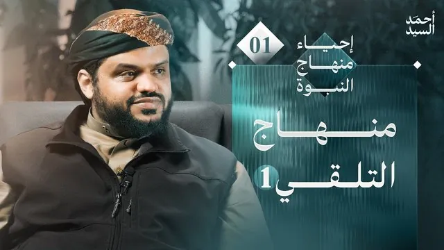
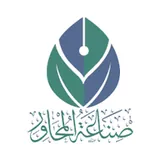
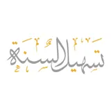
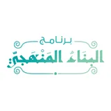
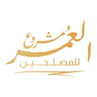
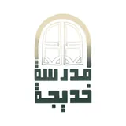

المشروع الإصلاحي
المشروع الإصلاحي
رسالتي
إحياء منهاج النبوة
وتشمل ثلاثة أقسام
1
القسم 1
منهاج النبوة في تلقي الدين
منهاج النبوة في تلقي الدين
إصلاح منهجية تلقي المعرفة الشرعية والدينية بشموليتها وفق هدي النبوة وخير القرون
المعالم التفصيلية (10)
الارتباط بالواقع وعدم الانعزال
تلقي الوحي مرتبطاً بأحداث الواقع ومؤثراً فيه.
01
التأني والتدرج والاستمرارية
أخذ الدين بتأنٍ وتدرج مع التزود والاستمرار الدائم دون انقطاع.
02
الشمولية والجمع بين العلم والعمل
التلقي الشامل لجميع موضوعات الدين مع الاقتران الفوري بالعمل.
03
الربط بمقاصد الدين ومركزية العبودية
ربط جميع أحكام الدين وجزئياته بالعبودية لله والتعظيم له.
04
التهيؤ الإيماني للقلب
تقديم بناء الإيمان وتزكية القلب قبل الخوض في التفاصيل الشرعية والصناعية.
05
التلقي للاستجابة والعمل
إعداد النفس للانقياد والتنفيذ المباشر لأوامر ونواهي الشرع.
06
المدارسة والتكرار المؤثر
التكرار القائم على التفكر والتدبر المؤثر في السلوك والنفوس.
07
تنويع الأساليب البيانية والتعليمية
استخدام وسائل بيان متنوعة ومبتكرة لتنشيط العقول وإيصال الفكرة.
08
التلقي القائم على القدوة
رؤية النموذج العملي المطبق للقرآن والدين واقعاً مشاهدًا.
09
مراعاة أحوال المتلقين
الجمع بين الخطاب العام والخاص وتحديد ما يناسب كل فئة.
10

عرض جميع النقاط (10)
2
القسم 2
منهاج النبوة في التربية
منهاج النبوة في التربية
صناعة المصلحين وتأهيلهم وتزكيتهم ليحملوا أمانة الدين ويسدوا الثغور
المعالم التفصيلية (12)
العناية المركزية بصناعة المصلحين
إعطاء بناء الشخصية الإصلاحية أولوية قصوى.
01
الشمولية في روافد البناء
تكامل الروافد العلمية، الإيمانية، التربوية، والتجريبية الميدانية.
02
القرب الدائم والخلطة الواسعة
التربية القائمة على طول المعايشة والملازمة في مختلف الظروف والأحوال.
03
الجمع بين التربية العامة والخاصة
التوجيه الجماعي للأمة، إلى جانب الرعاية الفردية والتوصيات الخاصة.
04
الإدراك التفصيلي لأحوال المتربين
استيعاب قدرات وإمكانات كل فرد وتوجيه طاقته للثغر المناسب له.
05
التكليفات العملية والتربية الميدانية
ممارسة الدعوة والتمكين تحت الإشراف والتقويم.
06
حسن التعامل مع الأخطاء البشرية
الواقعية في استيعاب الخطأ البشري وتصحيحه دون إسقاط المصلح.
07
تنويع الأساليب التربوية
استخدام التحفيز والثناء، والعتاب والتغليظ بحسب الموقف والشخص.
08
التربية على الصبر والثبات والتضحية
صلب عود المصلح ليكون عصياً على الانكسار أمام الشدائد والابتلاءات.
09
التوعية بسبيل المجرمين والوعي بالأعداء
إدراك مخططات الأعداء وتحديات الواقع وعدم الاغترار بالسطحية.
10
التربية على العمل الدؤوب
اعتبار العمل للإسلام هوية يومية ومسؤولية مستمرة.
11
اتخاذ الأسباب مع قوة التوكل
الأخذ بجميع الأسباب المادية والأمنية والتقنية مع كمال اليقين بالله.
12
عرض جميع النقاط (12)
3
القسم 3
منهاج النبوة في الإصلاح دعوةً وتمكينًا
منهاج النبوة في الإصلاح دعوةً وتمكينًا
الممارسة الميدانية لإقامة الدين وتفعيل المصلحين عبر وسيلتي الدعوة والتمكين (الجهاد والسياسة)
المعالم التفصيلية (16)
العناية بالمشكلات الكبرى للواقع
تركيز الجهود الإصلاحية على المعضلات والنوازل الأساسية للأمة.
01
الجمع بين الإصلاح الداخلي والخارجي
مخاطبة كافة الأمم والمجتمعات الخارجية، بالتوازي مع تزكية وبناء المجتمع المسلم الداخلي.
02
العناية البالغة بالحجة والبيان والبرهان
بناء الخطاب الإصلاحي على الاستدلال العقلي والشرعي القوي لمواجهة الشبهات.
03
التجرد الإصلاحي
التنزه التام عن المطامع والمكاسب الدنيوية والشخصية في العمل الإسلامي.
04
اتخاذ الإصلاح منهجاً مستمراً للحياة
الاستمرار في طريق الدعوة والإصلاح من البداية وحتى الموت.
05
مراعاة الأولويات وفقه الموازنات
تقديم الأهم فالأهم ومراعاة المصالح والمفاسد في الخطاب والدعوة.
06
مصاحبة الواجب الدعوي لوسائل التمكين
عدم التخلي عن البلاغ والدعوة حتى أثناء ممارسة السياسة أو الجهاد.
07
مركزية الجهاد في حماية الدين
الاعتقاد بأن تمام حماية الدين وإقامته تتطلب قوة تشريع الجهاد.
08
تنويع الثغور الاصلاحية والتمكين الواسع
توزيع المهام الاصلاحية وإتاحة المجال لكل كفاءة لسد ثغرها.
09
الإصلاح المستمر لنفوس المصلحين
العناية الدائمة بتزكية نفوس القائمين على المشاريع وتقويم أخطائهم.
10
العناية بالمستقبل والتهيئة المبكرة
الاستعداد المسبق للفرص والتحديات المستقبلية للمشروع.
11
مركزية السياسة والحكم بما أنزل الله
اعتبار حراسة الدين وسياسة الدنيا به مقصداً أساسياً.
12
التربية على وحدة الصف واجتماع الكلمة
الحذر الشديد من التنازع والتفرق والحرص على التآلف.
13
الهيمنة المطلقة لمرجعية الوحي
الانطلاق والتسليم المباشر والصدور التام عن القران والسنة.
14
مراعاة المراحل الإصلاحية
مراعاة تغير الأساليب والوسائل بحسب مرحلة الاستضعاف أو التمكين.
15
موافقة السنن الإلهية
فهم قوانين الله في النصر والهزيمة والابتلاء وبناء التوقعات عليها.
16
عرض جميع النقاط (16)

سلسلة مرئية · 7 محاضرات
سلسلة إحياء منهاج النبوة
سلسلة إحياء منهاج النبوة
شرحٌ مرئيّ لهذه الأقسام الثلاثة ومعالمها.

مشاهدة السلسلة
غايات
أهداف المشروع
أهداف المشروع
تخريج الحَمَلة الربانيين المتحملين لأعباء الدين والقيام به والعيش لأجله.
إنتاج المواد المعرفية التصحيحية في المجالات التي تكون فيها المعرفة خاطئة ومعطّلة.
تخريج الكوادر في المجالات الفكرية والشرعية والتربوية والدعوية المتمكنة علميا وشرعيا.
التربية الدعوية للأجيال الصاعدة على مركزيات الدين والإيمان والعلم والوعي.
إيجاد القدوات والنماذج المتمثلة للدين والأخلاق والوعي والوسطية.
مدافعة الأفكار الباطلة المؤثرة في الواقع والمتصلة بالثقافات الفكرية المخالفة للإسلام.
التجديد المعرفي والفكري والعملي في بعض الميادين الإصلاحية التي تتطلب تجديدا.
إحياء الهمم والعزائم للعمل للإسلام وترك الغفلة.
بث الثقة بالإسلام وثوابته وتعزيز اليقين بذلك ومقاومة الشبهات.
عرض جميع النقاط (9)
أثر
إنجازات المشروع
إنجازات المشروع
عشرات الآلاف من الطلاب حول أكثر من 30 دولة
تم إطلاق برامج تعليمية إلكترونية تحمل مواد المشروع وكثيرا من المواد الأخرى التي تحقق أهداف البرنامج.
صناعة المحاور
الدفعة الثامنة تدرس الآن
8 دفعات

البرنامج التخصصي في صناعة المحاور
الدفعة الخامسة تدرس الآن
5 دفعات
أكاديمية الحديث
الدفعة الثالثة تدرس الآن
3 دفعات

برنامج السراة
الدفعة الثالثة تدرس الآن
3 دفعات

أكاديمية الجيل الصاعد
الدفعة الثانية تدرس الآن
دفعتان

صناعة المربي
الدفعة الثانية قريبًا
دفعة واحدة
البناء المنهجي
3 دفعات تدرس الآن
3 دفعات

البناء الفكري
الدفعة الأولى تدرس الآن
دفعة واحدة

مشروع العمر للمصلحين
دفعتان تدرس الآن
دفعتان

مدرسة خديجة
الدفعة الأولى تدرس الآن
دفعة واحدة

عرض جميع البرامج (10)
الصفحة التالية
معالم المشروع الإصلاحي